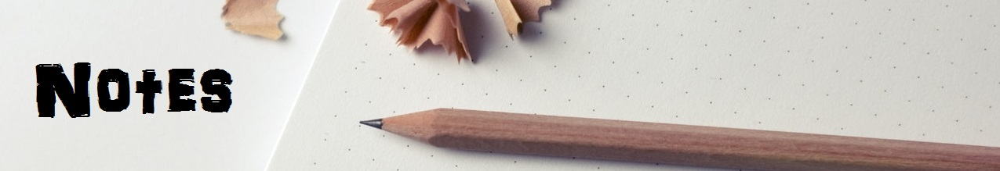
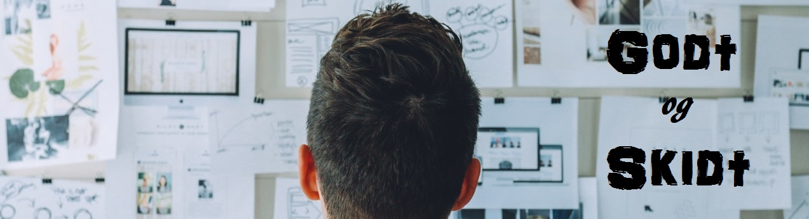

Læringsportefolio

Strukturen
Jeg startede ud med at ville lave en hjemmeside der kun havde 6 forskellige sider, et index, de 4 forskellige kerneområder, og en side med projekter. Denne ide kom jeg dog hurtig fra
da der ville komme alt for mange elementer ind på disse sider, og de hurtigt ville blive uoverskuelige at kikke på. Derfor kom jeg på ideen at disse sider skulle indeholde titlerne på de emner jeg har været igennem, og at de skulle linke til deres helt egen side, der ville fungere som en one page med alle informationerne liggende der.
Hjemmesiden webstruktur blev til en heraisk hjemmeside, med en lille del af webstrukturen i.
Jeg har valgt at opbygge min side på denne måde, fordi denne hjemmeside ikke er set som færdig, da jeg kun lige er begyndt på uddannelsen, og stadig har halvandet år, til at tilføje endnu mere viden til hjemmesiden.
Siden er ment som et opslagsværktøj, så jeg i fremtiden, nemt kan finde informationer om emner jeg har været igennem igen.
Jeg har valgt at lave en menu bar, der med hjælp fra youtuberen Marc Hinton, kunne slide ind og ud af hjemmesiden. Denne form for menu bar virker lidt mere moderne end drop down menuen, og gav mig en lille indsigt i hvordan javascript fungerer.
Design
Da der ikke rigtig var nogen form for krav til designet af hjemmesiden, valgt jeg at opbygge min hjemmeside stilrent.Jeg har brugt bootstrap for at gøre hjemmesiden mere responsiv, og er noget jeg kender en lille smule mere til end grid systemet. Bootstap er en af de open source programmer der har mange funktioner, så man ikke selv skal arbejde så meget med det responsive, og man kan fokusere mere på ens indhold.
Jeg har valgt ikke at tage alt for mange elementer, og funktioner med ind på min hjemmeside, for at gøre den nem og brugervenlig, både for mig selv, og for andre der skal besøge hjemmesiden. Jeg har valgt at køre farvetemaet i sort og hvid, med røde overskrift, for at skabe en ensartethed gennem hjemmesiden.
Da der ikke har være meget tid, til både at skulle lægge alle informationerne ind på hjemmesiden, og have fokus på design, er designet kommet til at ligge lidt i baggrunden.

Fra one note til hjemmesiden
Da jeg startede på uddannelsen tog jeg alle mine noter i programmet one note, og jeg vil nok forsætte med dette fremover. Så da denne opgave blev givet ud, handlede det om at få alle disse noter kopirer ud, lagt ud, og
få skaffet et overblik over alle de noter der var.Derfra handlede det om at dele alle disse noter op i de forskellige fag der findes på skolen, og finde titler, der kunne bruges til de index's sider der er til emnerne.
På denne måde kom de forskellige emner ind på deres tilhørende sider, og kerneområderne tog deres form.

Skulle jeg have gjordt noget andet?
Noget jeg skal være bedre til når jeg tager noter, er ikke at skrive præsic det læren siger, men tænke over det, og skrive en mere personlig version af den information, der er blevet givet.
Dog kan dette være lidt svært at gøre, når undervisninger er for hurtig.Jeg ville gerne have haft lidt mere fokus på søgeoptimeringen, da jeg aldig har arbejdet med denne del, ville det have været bedre, at jeg fra starten havde mere fokus på at få denne del med.
På hjemmesiden ville jeg gerne have haft lidt mere fokus på selve designet, men da jeg vidste det ikke var det mest vigtige, kom jeg lidt fra det.
Min menu bar skulle jeg ikke have brugt så meget tid på som jeg har, men jeg vil sige at jeg har lært en del, ved at arbejde med den.
Hvad gik godt?
Som både ondt er min navigation også rigtig god i mine øjne, den giver en ny form for navigation i forhold til den normale drop down menu. Jeg har vist flere min menu bar, både folk der kender til kodning, og
folk der ikke gør, og de kan alle lide den.Selvom hjemmesiden ikke indeholder den mest advanceret CSS, design, er den meget stilren, hvilket er et element jeg personligt godt kan lide.
En lille ting jeg er glad for jeg fik til at virke, var min lille tilbage knap under hvert emne. Det er en lille ting, der gør navigationen meget nemmere, hvis man for eksemple trykkede forkert på et emne, eller bare gerne vil et skridt tilbage.
Kilder;
Marc Honton video: https://www.youtube.com/watch?v=xVYrz61IBpQ&t=711s
Design Billede: https://www.pexels.com/photo/white-printer-paper-196645/
Notes billede: https://www.pexels.com/photo/notebook-pencil-notes-sketch-8763/
Billede til godt og skidt: https://www.pexels.com/photo/man-wearing-black-and-white-stripe-shirt-looking-at-white-printer-papers-on-the-wall-212286/